Yield er et finansielt nøkkeltall som måler den årlige avkastningen på en investering uttrykt som en prosentandel av investeringens markedsverdi. Dette konseptet er sentralt innen regnskapsføring, finansanalyse og investeringsevaluering, og brukes til å sammenligne avkastning på ulike investeringsalternativer.
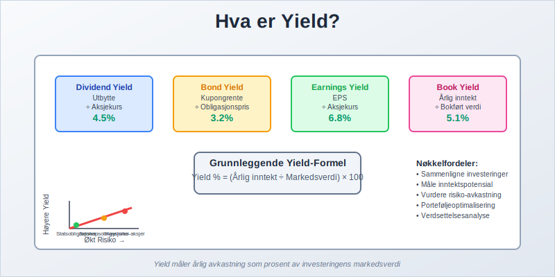
Hva er Yield?
Yield representerer den årlige inntekten fra en investering som en prosentandel av dens nåværende markedspris eller bokførte verdi. Dette gjør det mulig å sammenligne lønnsomheten til ulike investeringer på en standardisert måte, uavhengig av investeringens størrelse eller opprinnelige kostnad.
Grunnleggende Yield-Formel
Den grunnleggende formelen for yield er:
Yield (%) = (Årlig inntekt / Markedsverdi) × 100
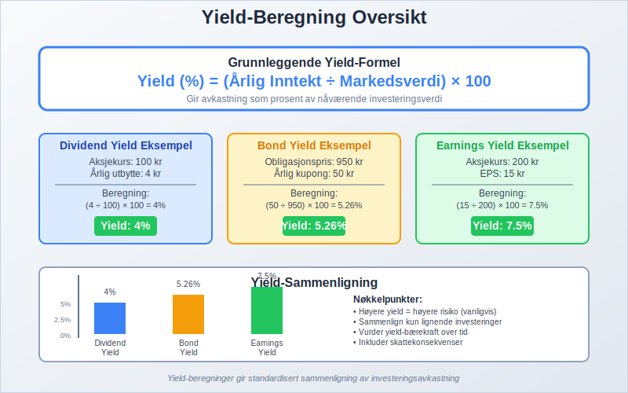
Typer Yield i Regnskap og Investering
1. Dividend Yield (Utbytteavkastning)
Dividend yield måler årlig utbytte som en prosentandel av aksjekursen:
Dividend Yield = (Årlig utbytte per aksje / Aksjekurs) × 100
Dette er særlig relevant for aksjeselskap som regelmessig utbetaler utbytte til sine aksjonærer.
2. Bond Yield (Obligasjonsavkastning)
Bond yield omfatter flere varianter:
- Current Yield: Årlig kupongrente / Obligasjonspris
- Yield to Maturity (YTM): Total avkastning ved å holde obligasjonen til forfall
- Yield to Call (YTC): Avkastning dersom obligasjonen innløses tidlig
3. Earnings Yield (Inntjeningsavkastning)
Earnings yield er omvendt av P/E-forholdet og beregnes som:
Earnings Yield = (Resultat per aksje / Aksjekurs) × 100
Dette målet brukes ofte i inntjeningsbasert verdivurdering.
4. Book Yield (Bokført Avkastning)
Book yield beregnes basert på bokført verdi i stedet for markedsverdi:
Book Yield = (Årlig inntekt / Bokført verdi) × 100
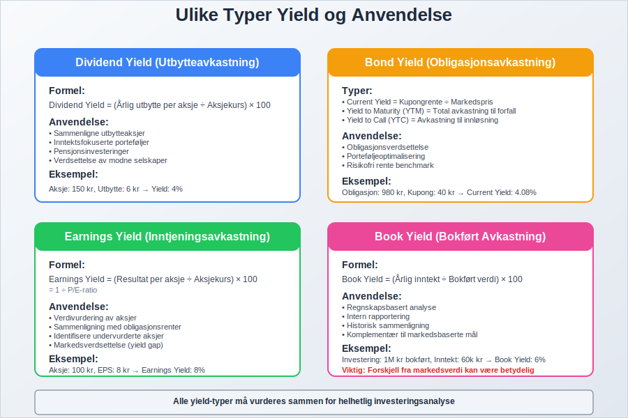
Yield-Beregning for Ulike Investeringstyper
Aksjeinvesteringer
For aksjer kan yield beregnes på flere måter:
| Yield-Type | Formel | Anvendelse |
|---|---|---|
| Dividend Yield | Utbytte / Aksjekurs | Inntektsfokuserte investorer |
| Earnings Yield | EPS / Aksjekurs | Verdivurdering og sammenligning |
| Free Cash Flow Yield | FCF per aksje / Aksjekurs | Kontantstrømanalyse |
Obligasjonsinvesteringer
Obligasjoner har komplekse yield-beregninger som tar hensyn til:
- Kupongrente: Fast eller variabel rentebetaling
- Markedspris: Kan variere fra pålydende verdi
- Forfallstid: Tid til obligasjonen forfaller
- Kredittkvalitet: Risiko for mislighold
Eiendomsinvesteringer
For eiendom brukes ofte kapitalisering rate (cap rate):
Cap Rate = (Netto driftsinntekt / Eiendomsverdi) × 100
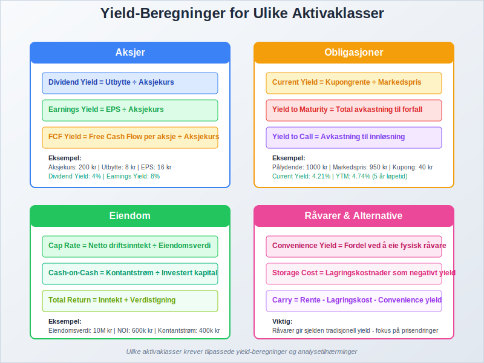
Praktiske Eksempler på Yield-Beregning
Eksempel 1: Dividend Yield
Et aksjeselskap med:
- Aksjekurs: 100 kr
- Årlig utbytte: 4 kr per aksje
Dividend Yield = (4 / 100) × 100 = 4%
Eksempel 2: Bond Yield
En obligasjon med:
- Pålydende: 1000 kr
- Kupongrente: 5% (50 kr årlig)
- Markedspris: 950 kr
Current Yield = (50 / 950) × 100 = 5,26%
Eksempel 3: Earnings Yield
Et selskap med:
- Aksjekurs: 200 kr
- Resultat per aksje: 15 kr
Earnings Yield = (15 / 200) × 100 = 7,5%
Dette tilsvarer en P/E-ratio på 13,33 (200/15).
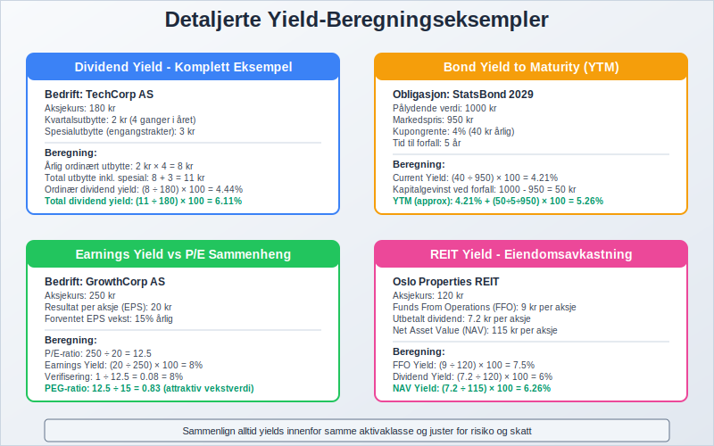
Yield og Regnskapsføring
Regnskapsbehandling av Yield
I regnskapsføring er yield-konseptet viktig for:
- Verdivurdering av investeringer: Brukes i verdivurdering av finansielle instrumenter
- Nedskrivningstesting: Yield brukes som diskonteringsrente
- Leasing-beregninger: Implisitt rente i leieavtaler
- Pensjonsmidler: Forventet avkastning på pensjonsmidler
IFRS og Yield
Under International Financial Reporting Standards (IFRS) er yield relevant for:
- IFRS 9: Finansielle instrumenter og forventet kredittap
- IFRS 16: Leieavtaler og diskonteringsrenter
- IAS 19: Personalytelser og aktuarielle beregninger
- IAS 36: Nedskrivning av eiendeler
Norske Regnskapsstandarder
I Norge følger mange selskaper God Regnskapsskikk hvor yield brukes i:
- Avskrivning av varige driftsmidler
- Verdivurdering av investeringer
- Beregning av nåverdi
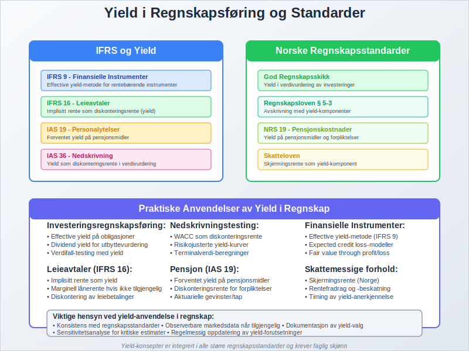
Yield-Kurver og Rentestruktur
Hva er en Yield-Kurve?
En yield-kurve viser forholdet mellom renter (yield) og forfallstider for obligasjoner med lik kredittkvalitet. Kurven brukes til å:
- Forutsi økonomiske trender: Normal, flat eller invertert kurve
- Prissette obligasjoner: Benchmark for nye utstedelser
- Risikohåndtering: Porteføljediversifisering
Typer Yield-Kurver
| Kurve-Type | Beskrivelse | Økonomisk Signal |
|---|---|---|
| Normal | Lange renter høyere enn korte | Sunn økonomisk vekst |
| Flat | Like renter på alle forfallstider | Økonomisk usikkerhet |
| Invertert | Korte renter høyere enn lange | Potensielt resesjon |
Yield Spread
Yield spread er forskjellen mellom yields på ulike obligasjoner og brukes til å måle:
- Kredittrisiko: Forskjell mellom selskaps- og statsobligasjoner
- Likviditetsrisiko: Forskjell mellom likvide og mindre likvide obligasjoner
- Løpetidsrisiko: Forskjell mellom korte og lange obligasjoner
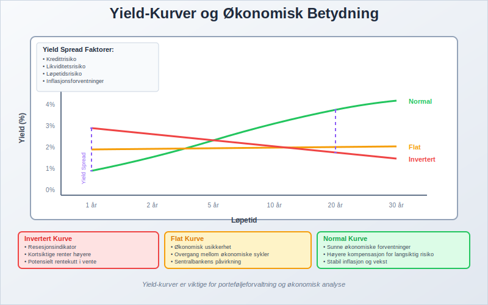
Faktorer som Påvirker Yield
Makroøkonomiske Faktorer
- Sentralbankens styringsrente: Påvirker hele rentekurven
- Inflasjon: Reell vs. nominell yield
- Økonomisk vekst: Påvirker kredittrisiko og etterspørsel
- Valutapolitikk: Internasjonale kapitalstrømmer
Selskapsspesifikke Faktorer
For aksjeselskap påvirkes yield av:
- Lønnsomhet: Høyere profitt gir høyere earnings yield
- Utbyttepolitikk: Påvirker dividend yield direkte
- Vekstforventninger: Høy vekst kan gi lavere current yield
- Finansiell risiko: Høy gjeldsgrad påvirker kredittrisiko
Markedsfaktorer
- Tilbud og etterspørsel: Påvirker priser og dermed yield
- Likviditet: Likvide markeder gir lavere yields
- Volatilitet: Høy volatilitet krever høyere yield
- Investorsentiment: Risikoapeptitt påvirker yield-premie
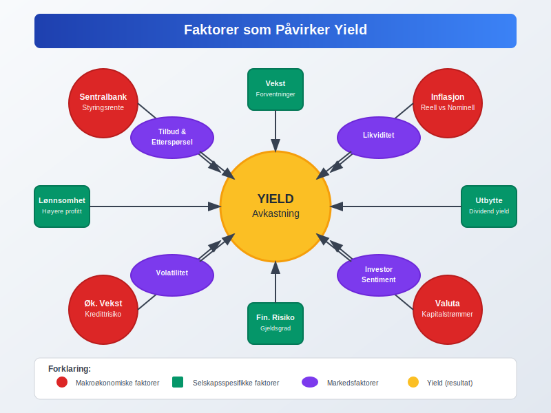
Yield og Skattemessige Konsekvenser
Skatt på Yield i Norge
Ulike typer yield beskattes forskjellig:
| Yield-Type | Skattesats | Kommentarer |
|---|---|---|
| Utbytte | 22% + skjerming | Fritaksmetoden for selskaper |
| Renter | 22% | Alminnelig inntekt |
| Kapitalgevinst | 22% | Ved realisering |
Skjermingsfradrag
For private investorer gir skjermingsfradrag skattefordeler:
Skjermingsfradrag = Aksjekapital × Skjermingsrente
Dette reduserer skattepliktig utbytte og påvirker effektiv yield.
Skatteoptimalisering
Strategier for å optimalisere yield etter skatt:
- Timing av realisering: Utsett skattepliktige gevinster
- Skatteeffektive investeringer: ISK-konto eller pensjonssparing
- Tap-/gevinst-modregning: Realiser tap mot gevinster
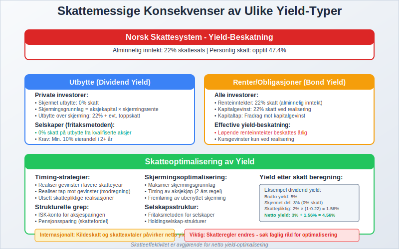
Yield-Analyse og Verdsettelse
Relative Yield-Analyse
Sammenligning av yields brukes til å identifisere:
- Undervurderte aksjer: Høy earnings yield vs. markedet
- Attraktive obligasjoner: Høy yield justert for risiko
- Sektorrotasjon: Identifiser attraktive bransjer
Yield-basert Verdsettelse
Dividend Discount Model (DDM) bruker dividend yield til verdsettelse:
Aksjeverdi = Forventet utbytte / (Avkastningskrav - Vekstrate)
For investeringsselskap er yield-analyse spesielt viktig for porteføljesammensetning.
Yield Gap-Analyse
Yield gap sammenligner earnings yield med obligasjonsrenter:
Yield Gap = Earnings Yield - 10-års statsrente
Positiv gap indikerer potensielt undervurderte aksjer.
Q-ratio og Yield
Q-ratio kan kombineres med yield-analyse for å vurdere:
- Markedsverdi vs. gjenopprettingskost i forhold til yield
- Investeringsmuligheter basert på yield-attraktivitet
- Markedstiming ved å sammenligne historiske yield-nivåer
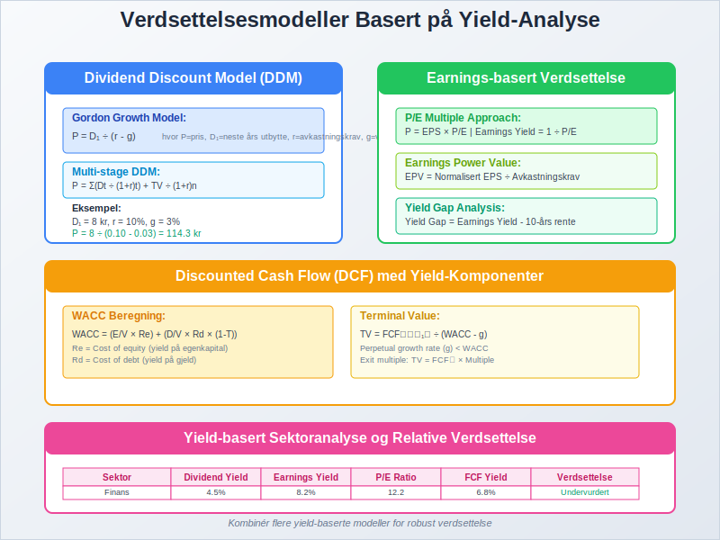
Yield og Porteføljeforvaltning
Asset Allocation basert på Yield
Strategisk aktivaallokering bruker yield til å:
- Balansere risiko og avkastning: Høyere yield for høyere risiko
- Rebalansering: Justere basert på relative yields
- Taktisk allokering: Kortsiktige yield-muligheter
Yield-baserte Investeringsstrategier
Dividend Growth Investing
Fokus på selskaper med:
- Konsistent utbyttevekst: Årlig økning i dividend yield
- Bærekraftig utbytterate: Utbytte dekket av kontantstrøm
- Stabile forretningsmodeller: Forutsigbare inntekter
High Yield Strategies
Investering i:
- Høyavkastende obligasjoner: Høyere risiko for høyere yield
- REITs: Eiendomsinvesteringstrust med høy dividend yield
- Master Limited Partnerships (MLPs): Energi- og infrastrukturselskaper
Quality Yield Approach
Kombinerer yield med kvalitetskriterier:
- Finansiell styrke: Lav gjeldsgrad og høy likviditet
- Konsistent lønnsomhet: Stabile fortjenestemarginer
- Konkurransefortrinn: Varige konkurransefordeler
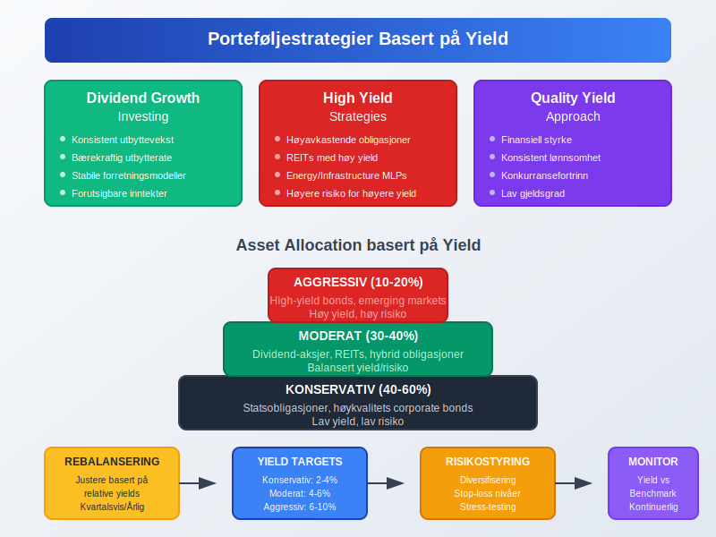
Yield og Risikohåndtering
Yield-Risk Trade-off
Høyere yield kommer generelt med høyere risiko:
- Kredittrisiko: Høyere yield på selskapsobligasjoner
- Likviditetsrisiko: Illlikvide investeringer krever yield-premie
- Volatilitetsrisiko: Høyvolatile aksjer har høyere earnings yield
Duration Risk
For obligasjoner måler duration prissfølsomhet for renteendringer:
Modifisert Duration = Duration / (1 + Yield)
Høyere duration gir større prisvolatilitet for gitte renteendringer.
Credit Spread Risk
Endringer i kredittspread påvirker obligasjonsyields:
- Kredittforverring: Økte spreads reduserer obligasjonspriser
- Kredittforbedring: Reduserte spreads øker obligasjonspriser
- Flightto-quality: Kapitalflukt til sikre havner
Yield-based Risk Metrics
| Risikometrikk | Formål | Anvendelse |
|---|---|---|
| Value at Risk (VaR) | Maksimalt tap | Porteføljerisiko |
| Conditional VaR | Forventet tap utover VaR | Ekstremrisiko |
| Maximum Drawdown | Største tap fra topp | Historisk risiko |
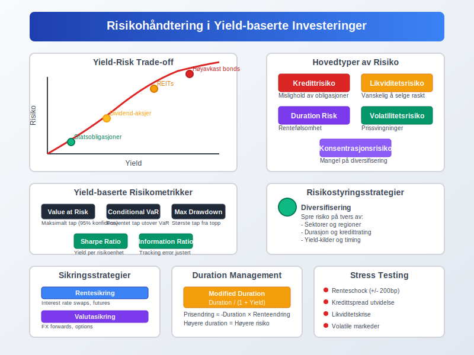
Sektorspesifikk Yield-Analyse
Finanssektoren
For banker og finansinstitusjoner:
- Net Interest Margin (NIM): Netto rentemargin som yield-indikator
- Return on Assets (ROA): Avkastning på totale eiendeler
- Return on Equity (ROE): Avkastning på egenkapital
REITs og Eiendom
Eiendomsinvesteringstrust fokuserer på:
- Funds From Operations (FFO) Yield: Driftsbasert yield
- Net Asset Value (NAV) Yield: Yield basert på eiendelsverdi
- Distribution Yield: Faktisk utbetalt yield til investorer
Energisektoren
Energiselskaper har spesielle yield-karakteristikker:
- Dividend Coverage Ratio: Utbytte dekket av kontantstrøm
- Free Cash Flow Yield: Kontantstrøm disponibel for utbytter
- Reserve-baserte målinger: Yield relatert til energireserver
Teknologisektoren
Teknologiselskaper har ofte:
- Lav dividend yield: Fokus på reinvestering for vekst
- Høy earnings yield: Høy lønnsomhet relativt til markedsverdi
- Vekstjustert yield: Yield i forhold til vekstrate (PEG-ratio)
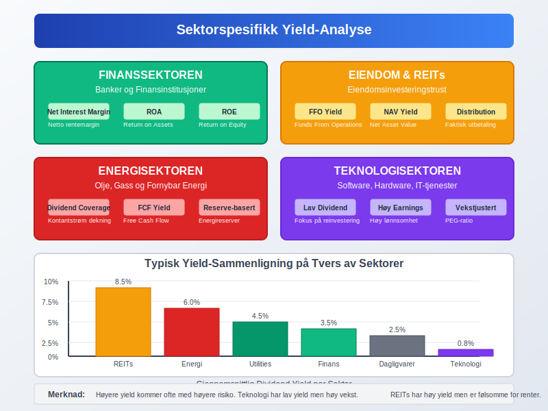
Internasjonal Yield-Sammenligning
Valutarisiko og Yield
Ved internasjonale investeringer må man vurdere:
- Nominell yield: I lokal valuta
- Valutajustert yield: Etter valutakursendringer
- Hedget yield: Etter valutasikring
Cross-Currency Yield Analysis
Sammenligning på tvers av valutaer krever justering for:
- Inflasjonsdifferanser: Real yield vs. nominell yield
- Rentedifferanser: Carry trade-muligheter
- Politisk risiko: Landspesifikk risikopremie
Global Yield-Jakt
Yield hunting i globale markeder:
- Emerging Markets: Høyere yields, høyere risiko
- Developed Markets: Lavere yields, lavere risiko
- Frontier Markets: Høyest yields, høyest risiko
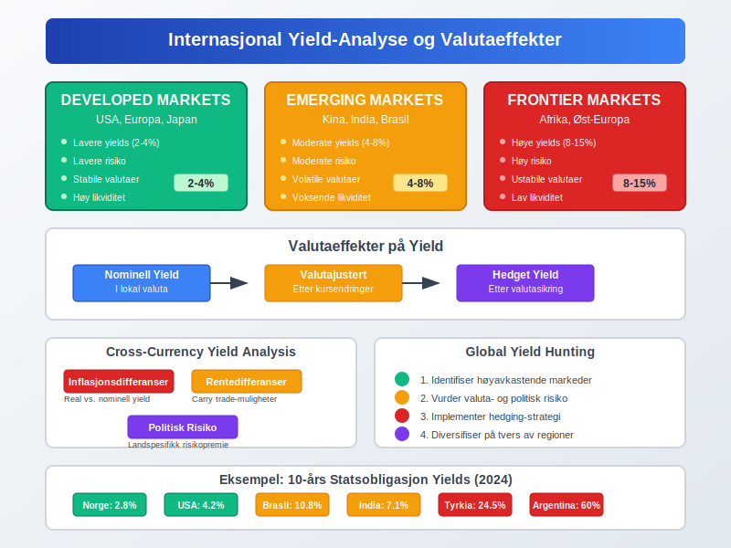
Digitale Verktøy for Yield-Analyse
Regneark og Modeller
Excel-baserte verktøy for yield-beregning:
- Dividend yield-kalkulator: Automatiserte beregninger
- Bond yield-modeller: YTM og duration-beregninger
- Portefølje yield-analyse: Vektet gjennomsnittlig yield
Finansielle Databaser
Bloomberg, Reuters, FactSet tilbyr:
- Real-time yield data: Oppdaterte kurser og yields
- Historiske yield-kurver: Trendanalyse over tid
- Sammenligningsverktøy: Peer-analyse og benchmarking
Algorithmic Yield Strategies
Kvantitative strategier basert på yield:
- Mean reversion: Yield tilbakevending til historisk gjennomsnitt
- Momentum strategies: Følg yield-trender
- Arbitrage: Utnytt yield-forskjeller mellom relaterte instrumenter
AI og Machine Learning
Kunstig intelligens i yield-analyse:
- Prediksjon av yield-endringer: Maskinlæringsmodeller
- Pattern recognition: Identifiser yield-mønstre
- Risk modeling: Avanserte risikomodeller
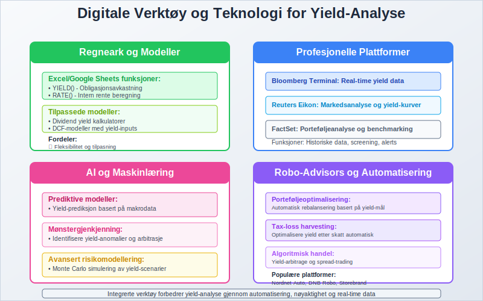
Fremtidige Trender for Yield
Klimarisiko og ESG
Miljømessige, sosiale og styringsmessige (ESG) faktorer påvirker yields:
- Green bonds: Lavere yields for miljøvennlige obligasjoner
- Brown discount: Høyere yields for miljøskadelige investeringer
- ESG integration: Bærekraft som yield-faktor
Demografiske Endringer
Aldrende befolkning påvirker yield-preferanser:
- Økt efterspørsel etter yield: Inntektsfokuserte pensjonister
- Lavere vekstforventninger: Påvirker earnings yields
- Pensjonsutfordringer: Økt fokus på yield-generering
Teknologisk Disrupsjon
Ny teknologi endrer yield-landskapet:
- Fintech: Lavere kostnader og bedre tilgang
- Blockchain: Nye yield-genererende instrumenter
- Robo-advisors: Automatisert yield-optimalisering
Pengepolitiske Endringer
Sentralbankpolitikk påvirker yield-miljøet:
- Ultra-lave renter: “Reach for yield” fenomenet
- Kvantitative lettelser: Påvirker yield-kurver
- Central Bank Digital Currencies (CBDCs): Nye referanserenter
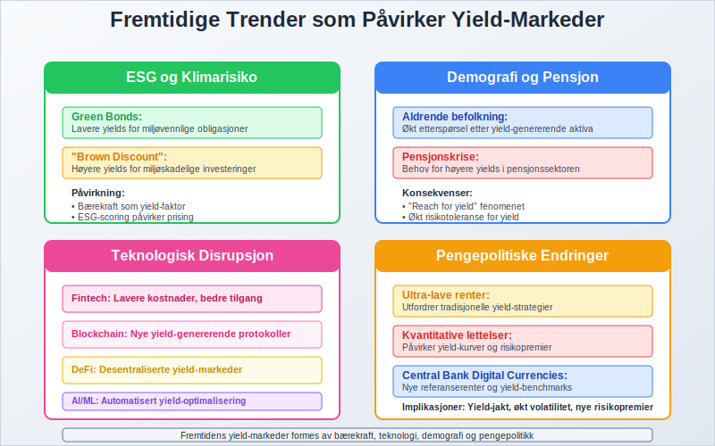
Yield og Bedriftsverdsettelse
Enterprise Value og Yield
Enterprise Value (EV) brukes sammen med yield-målinger:
- EV/EBITDA yield: Operasjonell yield-indikator
- Free Cash Flow to Enterprise Value: Kontantstrøm-yield
- EBIT yield: Operasjonell inntjening som yield
Dividend Discount Models
Utbyttemodeller for verdsettelse:
Gordon Growth Model
P = D₁ / (r - g)
Hvor:
- P = Aksjepris
- D₁ = Forventet utbytte neste år
- r = Avkastningskrav
- g = Vekstrate
Multi-stage DDM
For selskaper med varierende vekstfaser:
- Stadium 1: Høy vekst, lavt utbytte
- Stadium 2: Moderat vekst, økende utbytte
- Stadium 3: Stabil vekst, høyt utbytte
Relative Valuation og Yield
Komparativ analyse bruker yield-multipler:
- P/E vs. Earnings Yield: Direkte sammenligning
- EV/EBITDA vs. EBITDA Yield: Operasjonell sammenligning
- P/B vs. ROE: Bokført yield-sammenligning
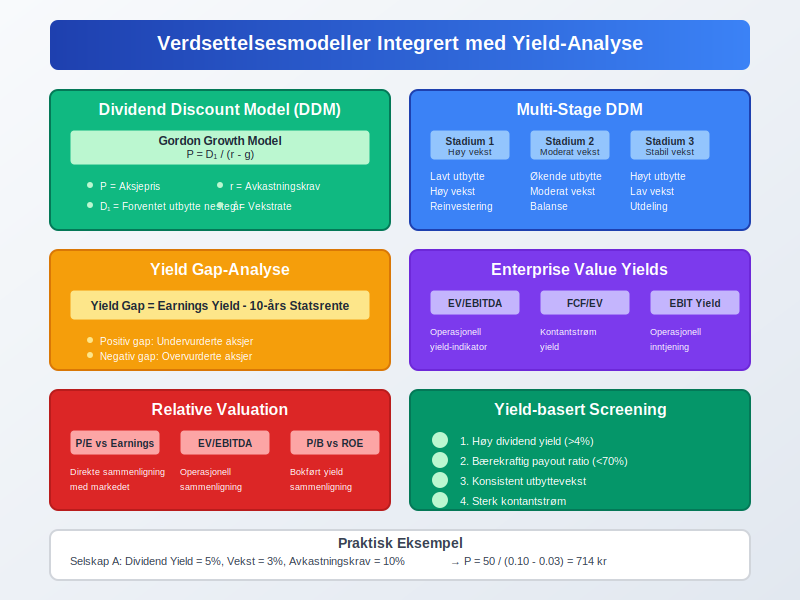
Yield-Optimalisering for Bedrifter
Kapitalstruktur og Yield
Optimal kapitalstruktur påvirker forskellige yields:
- Debt-to-Equity: Balanse mellom kostnad og risiko
- Cost of Capital: WACC-optimalisering
- Financial Leverage: Påvirkning på ROE og earnings yield
Utbyttepolitikk
Utbyttestrategi optimaliserer dividend yield:
- Steady dividend: Forutsigbar yield for investorer
- Progressive dividend: Årlig økning i utbyttet
- Special dividends: Engangsutbetalinger basert på overskudd
Buyback Programs
Tilbakekjøp av aksjer påvirker yield:
- Earnings per share økning: Høyere earnings yield
- Redusert share count: Konsentrerer eierskap
- Alternative til utbytte: Skatteeffektiv kapitalretur
Working Capital Management
Effektiv arbeidskapital påvirker yields:
- Cash conversion cycle: Raskere kontantgenerering
- Inventory turnover: Økt effektivitet og yield
- Receivables management: Forbedret kontantstrøm

Yield-basert Performance Measurement
Risikojusterte Yield-Målinger
Sharpe Ratio for Yield: Sharpe = (Yield - Risk-free rate) / Standard deviation
Information Ratio: IR = (Yield - Benchmark yield) / Tracking error
Attribution Analysis
Yield attribution identifiserer kilder til meravkastning:
- Security selection: Valg av individuelle verdipapirer
- Sector allocation: Allokering mellom sektorer
- Timing effects: Timing av investeringsbeslutninger
Benchmark Comparison
Yield-benchmarking bruker:
- Sector averages: Bransjegjennomsnitt for dividend yields
- Market indices: Brede markedsindekser som referanse
- Peer groups: Sammenligning med lignende selskaper
Performance Attribution
Decomposition av yield-performance:
| Komponent | Bidrag | Forklaring |
|---|---|---|
| Market timing | +/- % | Timing av inn- og utgang |
| Security selection | +/- % | Valg av individuelle navn |
| Sector allocation | +/- % | Vekting mellom sektorer |
| Interaction effect | +/- % | Kombinerte effekter |
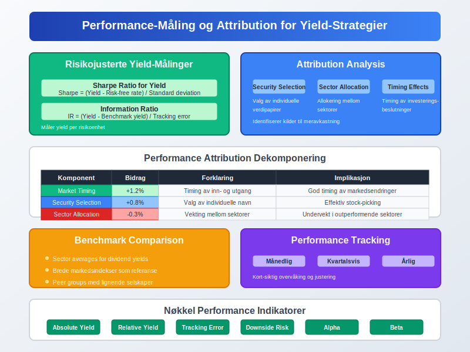
Vanlige Feil i Yield-Analyse
Feil 1: Yield-Chasing uten Risikohensyn
Problem: Fokusere kun på høy yield uten å vurdere underliggende risiko.
Løsning:
- Analyser kredittrisiko og bærekraft
- Vurder yield i forhold til historiske nivåer
- Diversifiser på tvers av yield-kilder
Feil 2: Ignorere Skattkonsekvenser
Problem: Sammenligne yields uten å justere for skatt.
Løsning:
- Beregn yield etter skatt
- Vurder skatteeffektivitet av ulike yield-typer
- Konsider skattetiming og -planlegging
Feil 3: Static Yield Analysis
Problem: Anta at current yield fortsetter uendret.
Løsning:
- Analyser yield-bærekraft og vekstpotensial
- Vurder fremtidige kontantstrømmer
- Stress-test yields under ulike scenarioer
Feil 4: Currency Impact Ignorering
Problem: Overse valutaeffekter på internasjonale yields.
Løsning:
- Beregn valutajusterte yields
- Vurder hedging-kostnader
- Analyser valutakorrelasjoner
Feil 5: Benchmark Mismatch
Problem: Sammenligne yields med irrelevante benchmarks.
Løsning:
- Velg passende sammenligningsgrunnlag
- Justér for risiko og sektor
- Brug multiple benchmarks for robusthet
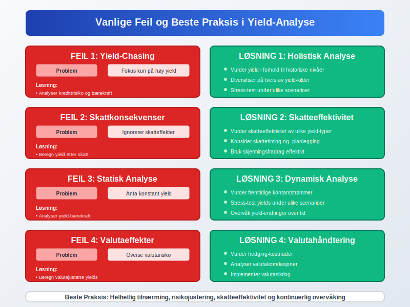
Regulatoriske Aspekter av Yield
Solvens II og Yield
For forsikringsselskaper påvirker Solvens II yield-vurderinger:
- Solvency Capital Requirement (SCR): Basert på yield-volatilitet
- Technical provisions: Diskontering med relevant yield-kurve
- Own Risk and Solvency Assessment (ORSA): Yield-scenarioanalyse
Basel III og Banking Yield
Basel III-regelverket påvirker bankers yield-strategier:
- Liquidity Coverage Ratio (LCR): Påvirker kortsiktige yield-preferanser
- Net Stable Funding Ratio (NSFR): Langsiktig funding og yield-matching
- Interest Rate Risk in Banking Book (IRRBB): Yield-risikostyring
MiFID II og Yield Disclosure
MiFID II krever transparens om yields:
- Cost and charges disclosure: Total cost impact på yields
- Research costs: Påvirkning på net yields for investorer
- Best execution: Optimalisering av post-cost yields
IFRS og Yield Recognition
IFRS-standarder påvirker yield-regnskapsføring:
- IFRS 9: Expected credit losses påvirker effective yields
- IFRS 15: Revenue recognition timing påvirker earnings yields
- IFRS 16: Lease accounting påvirker leverage og yields
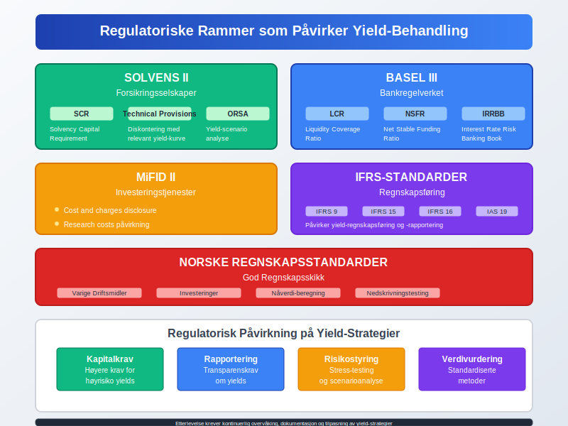
Konklusjon
Yield er et fundamentalt konsept som knytter sammen regnskapsføring, finans og investeringsanalyse. For å effektivt bruke yield-analyse er det viktig å:
- Forstå ulike yield-typer: Dividend, earnings, bond og book yields
- Vurdere risiko-yield trade-offs: Høyere yield medfører generelt høyere risiko
- Inkludere skattekonsekvenser: Yield etter skatt er den relevante målingen
- Bruke yield i verdsettelse: Integrere med verdivurdering og inntjeningsbasert verdivurdering
- Optimalisere porteføljer: Bruke yield som et kriterium blant mange
For Investorer
Yield-analyse hjelper med å:
- Identifisere inntektsgenererende investeringer: Balansere vekst og inntekt
- Sammenligne investeringsalternativer: Standardisert sammenligningsgrunnlag
- Håndtere porteføljerisiko: Diversifisering basert på yield-karakteristikker
- Optimalisere skatteeffektivitet: Maksimere yield etter skatt
For Bedrifter
Yield-konsepter er viktige for:
- Kapitalstrukturoptimalisering: Balansere kostnad og risiko
- Utbyttepolitikk: Optimalisere avkastning til aksjonærer
- Investeringsbeslutninger: Evaluere avkastningskrav på prosjekter
- Performance measurement: Måle og sammenligne lønnsomhet
Fremtidige Utfordringer
Yield-analysens fremtid vil preges av:
- Lavere rentemiljø: Utfordrer tradisjonelle yield-strategier
- ESG-integrasjon: Bærekraft som yield-faktor
- Teknologisk utvikling: AI og automatisering i yield-optimalisering
- Regulatoriske endringer: Nye krav til transparens og rapportering
Enten du arbeider med investeringsselskap, driver et aksjeselskap, eller evaluerer kapitalforvaltning, er forståelse av yield essensielt for å ta informerte finansielle beslutninger og maksimere verdiskapning for alle interessenter.
Husk at høye yields ikke alltid er bedre - de må alltid vurderes i kontekst av risiko, bærekraft og alternative investeringsmuligheter. En helhetlig tilnærming til yield-analyse, kombinert med grundig due diligence og risikohåndtering, er nøkkelen til suksess i dagens komplekse finansmarkeder.